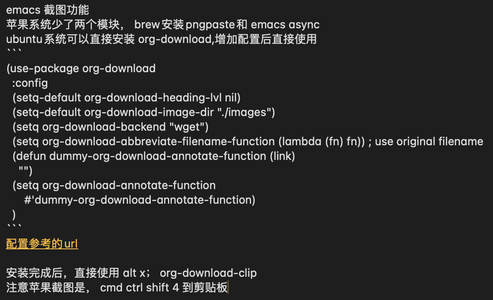
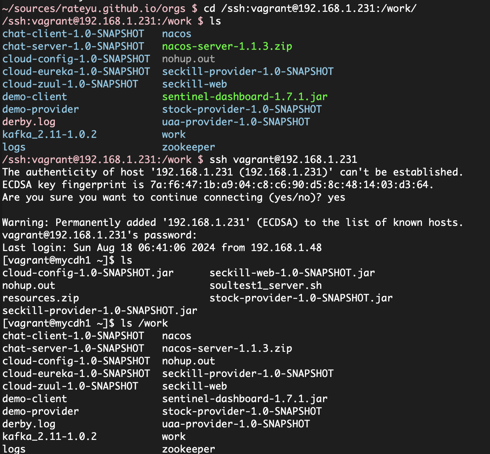
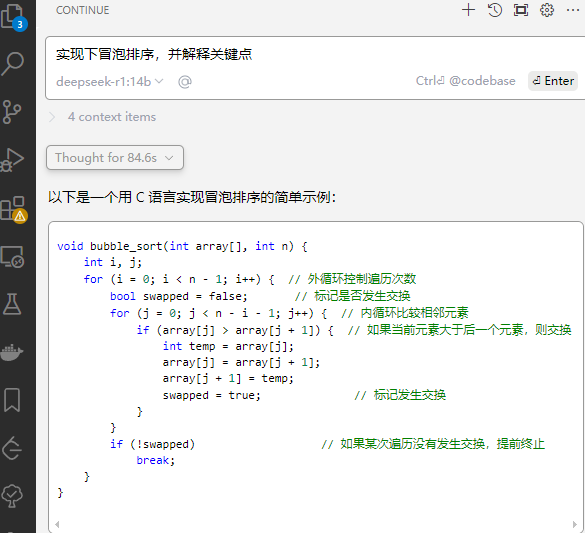

Table of Contents
- 1. emacs常见问题2025-2-24
- 1.1. emacs基本使用
- 1.2. emacs快捷键
- 1.3. dired文件夹模式
- 1.4. org-mod
- 1.5. org-refile移动文件操作
- 1.6. emacs灵感笔记配置和最近打开的文件
- 1.7. emacs 查找相关总结
- 1.8. 标签搜索
- 1.9. yasnippet
- 1.10. eww文本浏览器
- 1.11. emacs预览html
- 1.12. emacs 帮助相关
- 1.13. emacs search zz
- 1.14. emacs grep 命令
- 1.15. emacs搜索 zz tag阅读代码 查找定义与引用
- 1.16. emacs插件推荐ido和smex
- 1.17. emacs快速粘贴图片到org文件中
- 1.18. eww 快捷键
- 1.19. 如何给shell添加书签
- 1.20. eshell 命令行ps -ef | grpe java后，无法显示全命令行参数
- 1.21. magit使用
- 1.22. magit 常用命令
- 1.23. magit merge
- 1.24. emacs magit 提交乱码问题
- 1.25. emacs 使用chatgpt
- 1.26. emacs 调试lisp语言和lisp插件
- 1.27. emacs lsp-mod安装方法 & 代码提示 & 代码自动识别编译
- 1.28. emacs leetcode-cn
- 1.29. emacs 常用插件和命令 leetcode-cn
- 1.30. emacs 插件小结-eyebrowse-desktop-winner
- 1.31. vim emacs 快捷键比较
- 1.32. emacs 开发与调试, 刷题还是用mac air直接上网站刷题
- 1.33. emacs huge博客
- 1.34. emacs 数据库 调试?
- 1.35. emacs 启动idea64
- 1.36. emacs路径提示的插件
- 1.37. emacs和vscode如何调用gpt
- 1.38. emacs 152 ubuntu 机器请求gpt方法
- 1.39. emacs windows上使用
- 1.40. ssh登录远程windows服务器无法调用emacs配置的环境变量
- 1.41. windows修改键位，修改后更加便于打字
- 1.42. screen 踢掉原用户
- 1.43. 安装自定义的theme
1. emacs常见问题2025-2-24
1.1. emacs基本使用
- 显示文件夹后，在另外窗口打开文件
ctrl x 4 b ctrl x f ctrl o，焦点不过去
- 复制文本内容ctrl shift @，选择文本内容
- 【更新】直接ctrl shift 上/下 选中文本
ctrl w 剪切，cmd w 复制 ctrl y 粘贴
- 链接
C-c C-l 编辑链接（此处为小写L） C-c C-o 打开链接（相当有用）
ctrl / 非常有用的撤销功能
具体怎么改你得看org-structure-template-alist的文档（C-h v org-structure-template-alist）
- 滚动屏幕
滚动另外一个窗口的屏幕向下/向上 ctrl cmd v/ctrl shift cmd v
- rgrep命令搜索文件中的字符串
- find-dired, -iname "学习"，搜索所有文件名
- 上面两个命令同时支持中文和 不区分大小写，爽了
- 使用命令直接导出md文件，org-md-export-as-markdown命令
1.2. emacs快捷键
code . / idea64 . ctrl alt s ,正则表达式搜索
1.3. dired文件夹模式
- 选中文件后，在另外窗口打开，直接 按 o 即可; f 直接在当前缓冲区查看文件
- 焦点不过去，直接查看， ctrl o
- 查看帮助命令，h
- 快速查看blame
- git blame
比如我要看当前区域的代码是 who/which commit 提交的。这种都是临时性的需求，因此它是通过特殊 command(C-c M-g b) 以开关的形式操作的（不然看起来太乱了）
= 比较文件 v 查看文件
D 删除文件 d删除文件标记/ x执行删除
m 标记/u 取消标记 执行 C 拷贝/R 重命名
Z 压缩 w 复制文件名 文件行时 拷贝的是文件名称 路径行时，拷贝的是文件路径
- 新建目录
C-c * 将本行设置为标题/正文
cmd shift &; 异步执行程序 cmd shift ！；执行程序，命令行比较少
1.4. org-mod
1.4.1. org文件导出为html文件
- org导出html文件
- 编辑完org，要导出ctrl c，ctrl e ，h导出html文件
- 执行sh mvhtml2post.sh
1.4.2. 列表和checkbox使用
- cmd shift ret – checkbox
[0/1][ ][100%][X]
- 改变状态方法，ctrl c,ctrl c
- todo ctrl shift ret
1.4.3. 其它：
- cmd 左右，升级降级标题
- 上线两个列表交换位置，cmd shift 上/下
- 循环改变标志符号 ctrl c -
ppp4. 标题间跳转
- C-c C-n 下个标题
- C-c C-p 上个标题
- C-c C-f 下个同级的标题
- C-c C-b 上个同级的标题
- C-c C-u 回到上层标题
1.4.4. org中到处的文件如何自动把回车放进去
在文件开头加上 \#+OPTIONS: \n:t 或者 (setq org-export-preserve-breaks t)
1.5. org-refile移动文件操作
1.6. emacs灵感笔记配置和最近打开的文件
;; 使用capture获取灵感 记录待办 记录笔记 (setq org-capture-templates '(("t" "Task" entry (file+headline "~/sources/rateyu.github.io/orgs/tasks.org" "Tasks") "* TODO %?\n %U") ("n" "Note" entry (file+headline "~/sources/rateyu.github.io/orgs/notes.org" "Notes") "* %? :NOTE:\n %U") ("i" "Idea" entry (file+headline "~/sources/rateyu.github.io/orgs/ideas.org" "Ideas") "* %U %?\n %i\n %a") ("j" "Journal" entry (file+datetree "~/sources/rateyu.github.io/orgs/journal.org") "* %U %?\n %i\n %a"))) (global-set-key (kbd "C-c t") (lambda () (interactive) (org-capture nil "t"))) (global-set-key (kbd "C-c n") (lambda () (interactive) (org-capture nil "n"))) (global-set-key (kbd "C-c i") (lambda () (interactive) (org-capture nil "i"))) (global-set-key (kbd "C-c j") (lambda () (interactive) (org-capture nil "j")))
;; 最近打开的文件 (recentf-mode 1) (setq recentf-max-menu-items 500) ;; 显示最近 25 个文件 (global-set-key (kbd "C-c C-r") 'recentf-open-files)
1.6.1. 单独自己实现了一个方法，但是无法正常追加，不知道哪里有问题，记录下
方法1: 第一次可以，无法连续追加 ;; 自定义函数 快速插入org文件中 ;; (defun my/org-save-clipboard-to-file () ;; "Save the clipboard contents to an org file." ;; (interactive) ;; (let ((content (current-kill 0))) ;; (with-temp-file "~/sources/rateyu.github.io/orgs/code-note.org" ;; (insert "* New Entry\n") ;; (insert (format "%s\n" content))))) ;; 每次按 C-c C-s 时，剪贴板中的内容就会保存到 notes.org 文件中 ;; (global-set-key (kbd "C-c C-s") 'my/org-save-clipboard-to-file)
方法2: 均不可以，不知道哪里有问题，还是避免造轮子吧 ;; 优化支持文件追加 (defun my2/org-save-clipboard-to-file () "Append the clipboard contents to an org file." (interactive) (let ((content (current-kill 0)) ;; 获取剪贴板内容 (file-path "~/sources/rateyu.github.io/orgs/code2note.org")) ;; 定义 Org 文件路径 (with-temp-buffer ;; 将剪贴板内容以 Org 语法插入 ;;(insert "* New Entry\n") (insert (format "** %U\n" (current-time-string))) ;; 添加时间戳 (insert (format "%s\n\n" content)) ;; 添加剪贴板内容 ;; 将内容追加到文件末尾 (append-to-file (point-min) (point-max) file-path))))
(global-set-key (kbd "C-c C-s") 'my2/org-save-clipboard-to-file) ;; 绑定快捷键
1.7. emacs 查找相关总结
- grep-find, find-name-dired
- 正则查找 ctrl alt r public\|private
- 生成etag的命令:find . \( -name "*.java" -o -name "*.js" -o -name "*.jsp" -o -name "*.html" -o -name "*.css" -o -name "*.cpp" -o -name "*.hpp" -o -name "*.go" -o -name "*.py" -o -name "*.php" -o -name "*.sh" -o -name "*.yaml" -o -name "*.yml" \) -print | etags -
- 快速选择单词，alt shift f/b， 然后快速搜索 ctrl s/r
- etag快捷键， visit-tags-table、alt+. 到定义 、alt+, 到引用、 list-tags、 occur、indent-region代码选中缩进
- org-download windows需要安装imagemagick软件才能使用
1.8. 标签搜索
建立好了tag系统，可以将相关信息收集到一个表中
C-c / m 或 C-c \ 标准检索， 按照tag进行检索 C-c a m 按标签搜索多个文件 需要把文件加入全局agenda
1.9. yasnippet
支持新建templage ctrl c & ctrl n
1.10. eww文本浏览器
- eww 提示输入浏览网址
- G 重新输入并载入网址
- g 重载
- b/B 添加/显示书签
- & 外部浏览器打开url
- q 退出
- l/r 后退/前进
- >/< 文件末尾和开头
- w 拷贝文章url
- S list
- s switch buffer
- cmd ret 创建新buffer
1.11. emacs预览html
browse-url-of-file eww-open-file
1.12. emacs 帮助相关
ctrl h ,m mod模块帮助 ctrl h ,f/v/k 查询命令、变量、快捷键
1.13. emacs search zz
查找文件：使用 find-name-dired，支持文件名的通配符查找。 eg: ming -> 找到文件 MingServer.java 查找字符串：使用 grep、find-grep 或 rgrep，支持递归地在多个文件中搜索字符串。 eg: find . -type f -exec grep -nH –null "ming*" \{\} \;
1.14. emacs grep 命令
grep –color=auto -nH –null -e "images" -r 递归-r
1.15. emacs搜索 zz tag阅读代码 查找定义与引用
1.15.1. 查找文件名或者字符串
提示选择项目，一般情况project根据git仓库作为默认项目进行查找 如果没有，需要用命令 project-switch-project
project-find-name 搜索文件名 project-find-rgrep 搜索文件中的文本内容，linux和mac使用很爽
另外两个搜索 搜索参数定义 搜索所有函数引用
1.15.2. 查找方法定义和引用
M-x xref-find-definitions：查找符号定义。 M-x xref-find-references：查找符号引用。
(global-set-key (kbd "C-c d") 'xref-find-definitions) ;; 绑定到 C-c d (global-set-key (kbd "C-c f") 'xref-find-references) ;; 绑定到 C-c f
sudo port install ripgrep
(insert-file-contents (expand-file-name "~/sources/nien-codes/01SimpleCrayIM"))
1.15.3. 生成etag文件
find . -name "*.java" -exec etags {} +
generate_tags.sh; shell脚本生成tags文件
#!/bin/bash
# 生成 TAGS 文件，支持多种语言
find . \( -name "*.java" -o -name "*.js" -o -name "*.jsp" -o -name "*.html" -o -name "*.css" -o -name "*.cpp" -o -name "*.hpp" -o -name "*.go" -o -name "*.py" -o -name "*.php" -o -name "*.sh" -o -name "*.yaml" -o -name "*.yml" \) -print | etags -
echo "TAGS file generated successfully."
chmod +x generate_tags.sh
./generate_tags.sh
自动加载
(setq tags-table-list '("~/project1/TAGS" "~/project2/TAGS"))
加载：M-x visit-tags-table。
查找定义：M-.。
查找引用：M-x xref-find-references。
1.15.4. 返回上一个文件
ctrl x 左右箭头或者 ctrl c 左右箭头
1.15.5. windows说明
windows系统文件使用gbk，emacs默认支持utf8 用字符串递归搜索文件内容时，会遭遇不确定的乱码问题，目前无法解决 换一种方式，使用“rg”的方式进行查询，它支持多种文件字符集格式的查找， 需要再验证下，是否可以解决windows中使用emacs进行文本查询的问题
注意，需要添加git的环境变量路径，因为它会使用习惯linux命令
1.15.6. 变量定义和函数定义的方法
1.15.7. emacs插件推荐
emacs推荐插件10个 ctrl-c,ctrl-l 插件
1.15.8. emacs选择多行字符串，方便的方法
mac使用 ctrl shift 上下，直接就可以选择文本了，这个真方便
1.16. emacs插件推荐ido和smex
ido是文件夹提示 smex是命令提示 这两个插件很方便
1.17. emacs快速粘贴图片到org文件中
html文件中应该是绝对路径 /images/11.png **需要手工修改**，此处需要注意
脚本要修改，copy的目标路径，html文件的png改为绝对路径
显示与不显示图片的快捷键 C-c C-x C-v：切换图片的内联显示（toggle inline images）。这个命令可以让你在显示和隐藏图片之间切换。
– #+ATTRORG: :width 60% 
1.18. eww 快捷键
w 拷贝当前页面 URL G 访问指定的url地址 g 刷新当前页面 q 退出 l 后退 r 前进 H 历史查看 & 外部网页访问 v 查看网页源码 b 添加当前网页到书签 B 查看书签 R 开启阅读模式 n/p 自动跳转到下一页/上一页 M-RET 在新 buffer 内打开链接
1.19. 如何给shell添加书签
emacs shell添加书签未成功，eshell尝试了下可以的 eshell是emacs内置shell，完全emacs lisp编写，更集成与emacs环境 注意要使用 cd ssh:myu@192.168.1.13: 方式打开，没有cd 无法显示正常的文件颜色 如下图示例
M-x eshell: 启动 Emacs 自己的 shell 实现，它完全用 Emacs Lisp 写成，更加集成 Emacs 功能。 M-x term: 这个命令提供了一个更接近传统终端的环境，支持复杂的文本界面，比如那些用于文本编辑器或音乐播放器的界面。 M-x ansi-term: 类似于 term，但它更好地支持 ANSI 转义序列，更适合需要运行交互式程序的情况 ``` (defun my-new-eshell () "Open a new uniquely named eshell instance." (interactive) (let ((eshell-buffer-index (1+ (length (seq-filter (lambda (buf) (string-prefix-p "eshell" (buffer-name buf))) (buffer-list)))))) (eshell eshell-buffer-index)))
``` 将这个函数添加到书签中： 首先，确保你已经安装并加载了 bookmark 模块。 使用 M-x bookmark-set 命令创建一个新书签，当提示你命名书签时，你可以命名为 “New Eshell”。 打开书签列表 (M-x bookmark-bmenu-list)，找到你刚才创建的书签，然后按 e 来编辑这个书签。 将 filename 改为你的 Emacs Lisp 文件位置，并将 handler 设置为 my-new-eshell。
- 打开新的eshell
通过 C-u M-x eshell 完成。这样做会提示你输入一个缓冲区编号
– #+ATTRORG: :width 60% 
1.20. eshell 命令行ps -ef | grpe java后，无法显示全命令行参数
(add-hook 'eshell-mode-hook
(lambda ()
(setq truncate-lines nil)))
ps -ef | grep java | less -S
ps: sudo -s 切换到root账号后 再ps，可以显示全部命令，并且可以换行
1.21. magit使用
- 此处需要梯子，否则安装很麻烦
ps: 经过测试，发现如下配置也可以安装，修改源
(setq package-check-signature nil)
(setq package-archives
'(("gnu" . "https://elpa.gnu.org/packages/")
("melpa" . "https://melpa.org/packages/")))
快速唤出方式 mysrc + tab 键
- 进入magit界面，按以下键：
s：add 增加 cc：commit 添加注释 ctrl c + ctrl c ：确认提交 P p：push推送到远程 帮助信息：ctrl h,m
L head , 空格查看，光标不移动；回车查看，光标移动
1.22. magit 常用命令
magit-status 绑定的命令：ctrl x g s stage;u unstage d , d 查看修改的内容 c , c commit ctrl c,ctrl c 提交 推送 push为 P,u 即可完成远程仓库的推送
magit-find-file,我们可以比如绑定到C-x m f,它可以指定访问某个分支中某个文件，且是放到一个临时的 buffer，只能说极其好用
h 显示帮助命令 magit使用的文档，日文版本的，感觉还不错 https://joppot.info/posts/f2721fb2-0942-4c4e-90e2-0dbdbb329bce
1.23. magit merge
Magit 会高亮冲突的文件，显示 Unmerged 状态。 按 e 打开冲突文件，手动解决冲突。 冲突解决后，按 s 将文件标记为已解决。
1.24. emacs magit 提交乱码问题
windows和macbook 都会提交git仓库，但是windows提交的就是乱码， 研究了 发现，需要几步设置就可以正常提交了，
- 强制使用 UTF-8 编码 (prefer-coding-system 'utf-8) (set-language-environment "UTF-8")
- 设置git提交时的编码git config –global i18n.commitEncoding utf-8
操作完上面两步，实测就可以正常提交中文了
说明： M-x describe-coding-system 保存缓冲区的编码：undecided-unix，表示当前缓冲区的编码尚未明确设置。 新文件的默认编码：chinese-gbk-dos，表示新文件将使用 GBK 编码进行保存，这通常是 Windows 系统上与中文相关的编码。 键盘输入的编码：chinese-gbk-unix，表示键盘输入使用 GBK 编码。 终端输出的编码：cp936（GBK 编码的别名），意味着终端输出使用的是 GBK 编码。 客户端间剪切和粘贴的编码：utf-16le-dos，表示通过 Emacs 进行的剪切和粘贴操作会使用 UTF-16 编码。 子进程的默认输入输出编码：undecided-dos 和 undecided-unix，表示子进程的输入输出编码尚未决定。
M-x revert-buffer-with-coding-system RET utf-8
1.25. emacs 使用chatgpt
1.26. emacs 调试lisp语言和lisp插件
断点：(debug) 下一步：n 进入：s 继续：c 退出：q
查看表达式：c h ，v 查看变量和表达式
lisp和java lisp一等公民是函数
1.26.1. 常用快捷键
Emacs 中有很多常用的快捷键用于执行和调试 Lisp 代码，以下是一些最常用的快捷键： M-x eval-expression：执行一个 Lisp 表达式。快捷键 M-:。 M-x eval-buffer：执行当前 buffer 中的所有 Lisp 代码。 M-x eval-region：执行选中的区域中的 Lisp 代码。 M-x ielm：启动一个交互式的 Emacs Lisp 环境，方便测试和调试。 M-x toggle-debug-on-error：开启错误调试模式，捕捉和调试错误。 M-x debug：手动进入调试模式，跟踪代码执行。 M-x edebug-defun：进入 edebug 调试模式，支持逐步执行和设置断点。 C-x C-e：执行当前行或选定区域的 Lisp 表达式（常用于在代码中测试单行代码）。
1.27. emacs lsp-mod安装方法 & 代码提示 & 代码自动识别编译
jdtls sever python3.11 lsp-mode安装
安装相关插件 company yasnippet
.emacs配置
;;lsp-mode-20241231.1934 ,需要>python3.11,安装 lspmod，jdtls， (add-to-list 'load-path "~/.emacs.d/lsp-mode-20241231.1934/") (require 'lsp-mode) (add-hook 'java-mode-hook #'lsp) ;; 在 Java 模式中启用 lsp (setq lsp-java-server-install-dir "~/jdtls/") ;; 指定 jdtls 的安装路径 ;; 代码提示功能 (add-to-list 'load-path "~/.emacs.d/company-mode-1.0.0/") (require 'company) (global-company-mode t) ;; 启用全局补全 (setq company-minimum-prefix-length 1) ;; 输入1个字符后显示补全 (setq company-idle-delay 0.0) ;; 补全菜单立即弹出 ;; (package-install 'yasnippet) (require 'yasnippet) (yas-global-mode 1)
1.28. emacs leetcode-cn
最近着迷emacs，刷leetcode题想也用下（可以排除干扰）， 下载了两个插件，一个是官方的插件，还有一个leetcode-cn改造版本， 感觉第二个改动比较小，以前没有接触过lisp语言，临时抱佛脚了一把， 居然被我调通了，特此记录下。
- 安装leetcode-cn，是否工下载的包，直接手工配置，参考如下：
;; leetcode-cn.el-master leetcode-20241115.527-elpa.bk emacs安装graphql插件 (add-to-list 'load-path "~/.emacs.d/leetcode-cn.el-master/") (add-to-list 'exec-path "/home/myu/.local/bin/") ;;(add-to-list 'exec-path "/home/myu/.local/bin") ;;(add-to-list 'load-path "~/.emacs.d/leetcode-20241115.527-elpa.bk/") (require 'leetcode) (setq leetcode-prefer-language "java") (setq leetcode-display-results nil) ;; 禁用结果中的样式显示 ;;(setq leetcode-site "https://leetcode.cn/") ;;(setq leetcode-site "https://leetcode-cn.com/") ;; 其他设置，比如保存解答 (setq leetcode-save-solutions t) (setq leetcode-directory "~/leetcode") (setq leetcode-prefer-sql "mysql")
- 还手工安装了这几个插件
emacs package-install graphql spinner 还有这些： 1687 pip3 install graphql 1871 pip3 install semgrep 1874 sudo snap install semgrep 1913 pip3 install jeepney 1915 pip3 install browser-cookie3 1917 pip3 install jeepney 1918 pip3 install dbus-python
到这里，更郁闷的来了，可以显示leetcode问题，总是提交失败，没办法硬着头皮调试leetcode.el代码， 最后找到这段代码后面没执行，(let\* ((my-cookies (executable-find "my<sub>cookies</sub>"))；直接 将路径写死，然后问题就解决了。
(aio-defun leetcode--login () "Steal LeetCode login session from local browser. It also cleans LeetCode cookies in `url-cookie-file'." ;;(debug) (leetcode--loading-mode t) (message "leetcode--login---") (ignore-errors (url-cookie-delete-cookies leetcode--domain)) (message "leetcode--login---222") (aio-await (leetcode--csrf-token)) ;knock knock, whisper me the mysterious information (message "3333") (message "exec-path: %s" exec-path) ;;/home/myu/.local/bin/my_cookies ;;/home/myu/.local/lib/python3.10/site-packages/my_cookies ;;(message "Does my_cookies exist? %s" (file-exists-p "/home/myu/.local/lib/python3.10/site-packages/my_cookies")) (message "my_cookies output: %s" (shell-command-to-string "/home/myu/.local/bin/my_cookies -d leetcode.cn")) (let* ( (message "444000") (my-cookies "/home/myu/.local/bin/my_cookies") ;;(let* ((my-cookies (executable-find "my_cookies")) (message "444") ;;(debug) (my-cookies-output (shell-command-to-string (concat (shell-quote-argument my-cookies) " -d leetcode.cn"))) (message "555") ;;(debug) (cookies-list (seq-filter (lambda (s) (not (string-empty-p s))) (split-string my-cookies-output "\n"))) (cookies-pairs (seq-map (lambda (s) (split-string s)) cookies-list)) (leetcode-session (cadr (assoc "LEETCODE_SESSION" cookies-pairs))) (leetcode-csrftoken (cadr (assoc "csrftoken" cookies-pairs)))) (leetcode--debug "login session: '%s'" leetcode-session) (leetcode--debug "login csrftoken: '%s'" leetcode-csrftoken) (url-cookie-store "LEETCODE_SESSION" leetcode-session nil leetcode--domain "/" t) (url-cookie-store "csrftoken" leetcode-csrftoken nil leetcode--domain "/" t)) (aio-await (leetcode--csrf-token)) ;knock knock, whisper me the mysterious information (leetcode--loading-mode -1))- 今天先到这里，后面再研究研究为什么
1.29. emacs 常用插件和命令 leetcode-cn
1.29.1. leetcode-cn快捷键
- ctrl p 在另外一个窗口打开
- l 切换不同语言 cpp golang python javascript
- 过滤：s regex，t tag，T toggle tag display，/ clear，g/G refresh
- o openproblem，v view ，b/B in browser，c/C solve problem
- 代码中有中文提交不上去？
1.30. emacs 插件小结-eyebrowse-desktop-winner
最近emacs学习了不少插件的使用，总结下：
eyebrowser, 创建不同的工作区，在工作区之间进行切换，工作区可以是不同的工作场景，这个和screen之间有什么样的区别？ desktop-save-mode，对工作区进行保存，自带插件，很是完美 winner-mode，对当前工作区的窗口进行前进和后退
1.31. vim emacs 快捷键比较
oemacs 与 vim 命令对比(网上摘录)
-----------------------------------------------------------------
exit: C-x C-c :qa /:wq /:xa /:q!
Get back/command mode: C-g <esc>
Backward(left): C-b h
Forward(right): C-f l
Next(down): C-n j
Previous(up): C-p k
stArt of line(^): C-a 0
End of line($): C-e $
mUltiple commands: C-u nnn cmd nnn cmd
Multiple commands: M-digitkey cmd
save File: C-x C-s :w
beginning of buffer: M-< 1G
end of buffer: M-> G
*scroll forward 1 screen*: C-v ^F
scroll forward 1/2 screen: ^D
scroll forward 1 line: ^E
*scroll backward 1 screen*: M-v ^B
scroll backward 1/2 screen: ^U
scroll backward 1 line: ^Y
scroll the other window: M-C-v
delete under cursor: C-d x
delete from cursor to eol: C-k D
iSearch forward: C-s
isearch Reverse: C-r
Search forward: C-s enter /
search Reverse: C-r enter ?
isearch regexp: M-C-s
isearch backward regexp: M-C-r
search regexp: M-C-s enter /
search backward regexp: M-C-r enter ?
Help: C-h C-h :help
Help Apropos: C-h a
Help key Bindings: C-h b :help [key]
Help Info: C-h i
Help Major mode: C-h m
Help tutorial: C-h t :help howto
Undo: C-_ u
Redo: C-f ^R
Mark cursor position: C-x r SPC m{a-zA-Z}
eXchange Mark and position: C-x C-x
goto mark in current file: C-x r j '{a-z}
goto mark in any file: '{A-Z}
*copy region*: M-w {visual}y
kill region: C-w {visual}d
*Yank and keep buffer*: C-y
Yank from kill buffer: M-y p
convert region to Upper: C-x C-u {visual}U
convert region to Lower: C-x C-l {visual}u
Insert special char: C-q octalnum/keystroke
^V decimal/keystroke
*replace*: M-x replace-string :%s/aaa/bbb/g
replace regexp: M-x replace-regexp :%s/aaa/bbb/g
query replace: M-% :%s/aaa/bbb/gc
query replace: M-x query-replace
query replace regexp: M-x query-replace-regexp
Open file: C-x C-f :r file
Save file: C-x C-s :w
Save all buffers: C-x s :wa
Save as: C-x C-w file :w file
Prompt for buffer: C-x b
List buffers: C-x C-b :buffers
Toggle read-only: C-x C-q :set ro
Prompt and kill buffer: C-x k
Split vertical: C-x 2 :split
Split horizontal: C-x 3 :vsplit (ver. 6)
Move to other window: C-x o ^Wp
Delete this window: C-x 0 :q
Delete other window(s): C-x 1 ^Wo
run shell in bg: M-x compile
kill shell run in bg: M-x kill-compilation
run make: :make Makefile
check error message: C-x` :echo errmsg
run shell and record: M-x shell :!script -a tmp
...clean BS, ... :!col -b <tmp >record
...save/recall shell record: C-x C-w record :r record
run shell: M-! sh :sh
run command: M-! cmd :!cmd
run command and insert: C-u M-! cmd :r!cmd
run filter: M-| file {visual}:w file
run filter and insert: C-u M-| filter {visual}:!filter
show option :se[t] {option}?
reset option to default :se[t] {option}&
reset boolean option :se[t] no{option}
toggle boolean option :se[t] inv{option}
wrap text at column 72 :se tw=72
do not wrap :se tw=0
autoindent :se ai
expand tab :se et
————————————————
版权声明：本文为博主原创文章，遵循 CC 4.0 BY-SA 版权协议，转载请附上原文出处链接和本声明。
原文链接：https://blog.csdn.net/hejinjing_tom_com/article/details/51700911
1.32. emacs 开发与调试, 刷题还是用mac air直接上网站刷题
lsp-mode 组织导入 lspmod imports 运行java run
realgud realgud:pdb 进行python调试 b linenum c 继续 n 下一步
leetcode 网站刷题 opt shit f 格式化代码 运行代码 cmd ' 提交代码 cmd enter
leetcode英文网站比中文网站更加易用 notebook 记录更加易用
1.33. emacs huge博客
1.34. emacs 数据库 调试?
ejc-sql realgud
1.35. emacs 启动idea64
idea管理项目比较不方便 结合emacs到书签功能 达到管理电脑中全部项目的目的 到达项目目录后，直接运行idea64 . ， 实现快速启动项目的目的
1.36. emacs路径提示的插件
启用 ido-mode 或 vertico-mode 来实现路径和文件名的补全
1.37. emacs和vscode如何调用gpt
本想使用emacs调用 chatgpt，deepseek，ollama，但是程序没有调通， lisp语言有报错，懒得调试了，后面还是用python语言调用吧
今天发现一个chatgpt推荐的一个插件，叫continue，可以在vscode和idea上调用

本地ollama服务上跑代码工具，14b模型跑起来有点吃力（4060ti），
尝试了ollama restapi，
## 生成响应
curl http://localhost:11434/api/generate -d '{
"model": "llama3.2",
"prompt":"Why is the sky blue?"
}'
## 与模型聊天
curl http://localhost:11434/api/chat -d '{
"model": "llama3.2",
"messages": [
{ "role": "user", "content": "why is the sky blue?" }
]
}'
ollama的快速入门写的还是挺不错的，最好的还是在官方的第一手资料哈
中文文档地址：https://ollama.readthedocs.io/quickstart/#_14 deepseek文档：https://api-docs.deepseek.com/zh-cn/ 本地运行continue示例：https://www.zzfly.net/ollama-deepseek-copilot/
windows上使用org-download插入图片需要安装magick， windows下载地址，https://imagemagick.org/script/download.php#windows 安装完后主要增加path地址，配置完后，命令行要可以使用 然后，org-download就可以正常使用了, org-download-clipboard
1.38. emacs 152 ubuntu 机器请求gpt方法
安装 gptel插件 服务器配置代理 export httpsproxy="http://192.168.1.14:7897" export httpproxy="http://192.168.1.14:7897" 注意windows网络不通，无法使用
修改参数 gptel-menu -m 选择参数，选择gpt-40模型，并且标价了，完美
使用curl -I google.com 进行测试
消除环境变量 unset httpproxy httpsproxy ftpproxy noproxy
1.39. emacs windows上使用
- 使用git命令要用eshell方式，其它方式有乱码，没有找到方法如何修改
- eshell中定义alias，快速命令 gs -3 => git log -3
需要在eshell中执行，alias gs 'git log $*' 每次只执行一次，emacs会自动记忆这个配置，内容保存在.eamcs.d/eshell/alias文件中
ps:ctrl c + ctrl , => 快速调用引用 并选择要插入的内容
1.40. ssh登录远程windows服务器无法调用emacs配置的环境变量
需要手工指定HOME，指定.emacs路径后，就可以正常调用了
set HOME=AppData/Roaming echo %HOME%
无法执行命令解决方法 ssh myu@192.168.1.7 -t "powershell"
1.41. windows修改键位，修改后更加便于打字
羡慕hhkb的键盘布局，网上找了相关的教程，研究了下。
主要修改两个键，使得操作更加科学，手指移动的距离更短， 譬如： caps <-> ctrl（left）
| <-> backspace |
windows方法一： windows环境使用的软件是，powertoys，后台占用内存15兆左右， 开着也还好，今天改完试了下效果，果然很爽！ 省去了2000大洋
windows方法二： 当然可以手工修改注册表，这样感觉比较麻烦，找了个软件：sharpkeys 这个软件设置完成后，可以直接写入注册表，提高了修改效率。
macos方法： 软件为 Karabiner Elements， 下载地址为：https://karabiner-elements.pqrs.org 同样修改键位如上，非常好用
这个软件可以根据键盘进行设置，如果你同时用蓝牙键盘和苹果自带键盘， 而且两个键位不同，这样也可以设置，设置完互不影响
另外windows注册表的方式进行修改，这种不用安装软件，有空可以试一下， 参考网址，讲的还行：https://baijiahao.baidu.com/s?id=1780874465682567658
可以想好主题，让gpt生成一个教程，并且生成图片， 然后确认修改后发布到知乎论坛上去 包括视频，文章等等
我要找到自己的副业，创建自己第二份收入
1.42. screen 踢掉原用户
一般是Dttached ,表示没有用户登录； Attached代表有用户登录； 可以用screen -D -r <screenid> 踢掉前用户，进入 <screenid> 界面
ctrl a，d 回到主终端
ctrl a , " 所有窗口列表 ctrl a , ? 命令帮助 ctrl a , A 给虚拟终端命名
1.43. 安装自定义的theme
github下载文件，zenburn-theme.el
(add-to-list 'custom-theme-load-path "~/.emacs.d/themes/") (load-theme 'zenburn t)